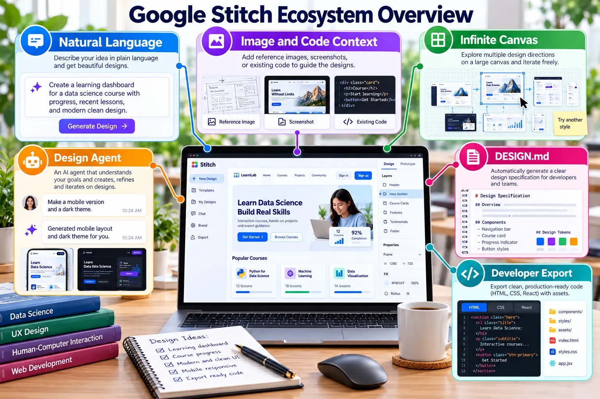

Describe the interface you need
Google Stitch is an experimental AI-powered design tool that can generate interface designs and front-end concepts from text or image prompts.

Current Stitch capabilities
Sign in and start a project
Open Stitch
Visit stitch.withgoogle.com.
Sign in
Use an eligible Google Account and complete any required verification or onboarding.
Create a project
Choose a web interface and begin with a detailed text prompt. Availability and features may vary by account.
Prompt framework
Create + system type + target users + required components + visual style + colour theme + responsive behaviour.
Create a responsive data engineering dashboard for university students. Include cards for data sources, active pipelines, failed jobs, processed records and recent activities. Use a clean white background with maroon and gold accent colours. Provide clear navigation and make the layout suitable for desktop and mobile.
Generate, evaluate and improve
Generate the first concept
Submit the prompt and review hierarchy, navigation, readability and component consistency.
Refine the prompt
Request specific improvements rather than starting again, for example: “Reduce empty space and improve the mobile card layout.”
Save evidence
Keep the final prompt and a clear screenshot. If sharing or export is available, retain the relevant link or exported output.
Compare with Figma
Identify three strengths and three improvements. Explain which design decisions you would transfer to your Figma prototype.
Add the evidence to README
## Google Stitch ### Prompt > Create a responsive data engineering dashboard... ### Output  ### Reflection Describe three strengths and three required improvements.
Expected output
- The final prompt is recorded.
- A screenshot of the generated interface is stored in the repository.
- A short comparison with the Figma design is included in README.
Evaluate AI-generated interface concepts
Responsible AI disclosure: State that Stitch was used, retain the final prompt and explain the human decisions used to evaluate and improve the output.